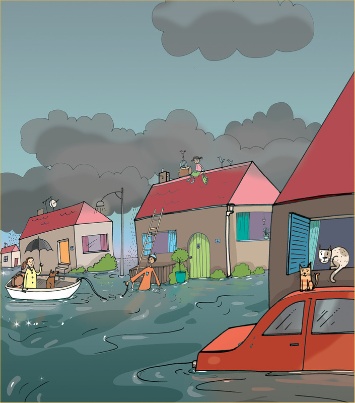
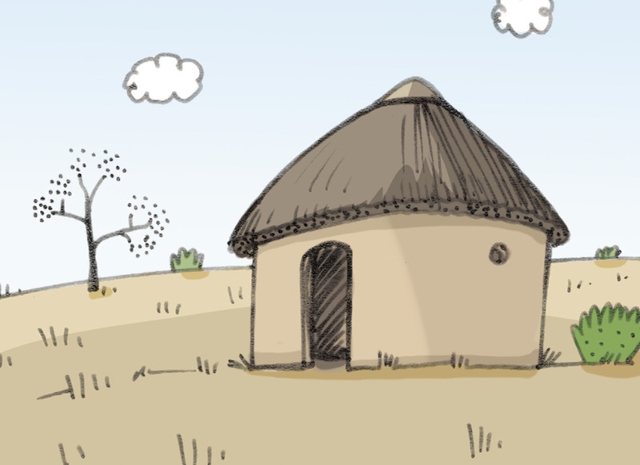
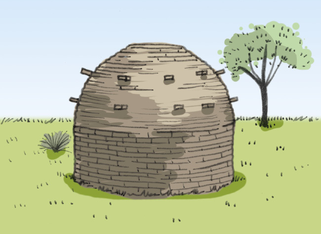
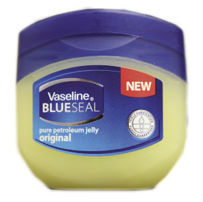
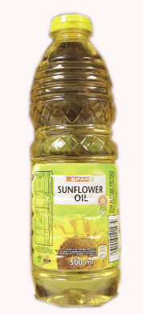
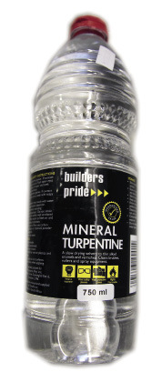
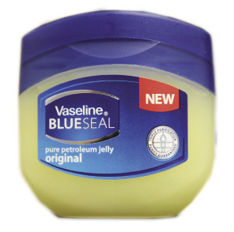
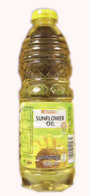
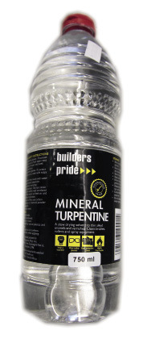

Mini-pat: skuilings vir vlugtelinge
Vir die volgende drie weke gaan jy boutegnieke van die verlede tot nou ondersoek, asook die maak van waterdigte materiaal en die brandeienskappe van tekstiele ondersoek. Jy gaan hierna ’n model noodskuiling ontwerp en bou. Jy gaan op jou eie werk en jou onderwyser gaan jou werk assesseer.

Figuur 1: n Informele nedersetting gedurende ’n brand
Plakkers het baie probleme wat hulle in die gesig staar. Spesifiek vuur is gevaarlik. Plakkersbrande veroorsaak jaarliks die dood van baie mense. Mense in plakkerskampe gebruik oop vure en kerse vir hitte en lig. Wanneer ’n kers omval, of ’n oop vuur nie nat genoeg gemaak word om die vlamme te blus nie, breek brande uit. Hierdie brande versprei baie vinnig omdat die plakkershutte baie naby aanmekaar gebou word. Daar is ook geen ordentlike paaie tussen die plakkershutte nie. Dit maak dit baie moeilik vir brandbestryders om by die brande uit te kom en die brande te blus.

Figuur 2: ’n Dorp wat oorstroom is na ’n hoë reënval
Mense bou soms huise in oop lande sonder om te dink of dit ’n goeie plek is om te bly. Die lande is gereeld laagliggend en daar is nêrens waarheen die stormwater kan dreineer wanneer dit swaar reën nie. Die area is dan in vloed en die water vloei deur hulle huise. Dit veroorsaak baie skade aan die min besittings wat hulle het. Hierdie mense wil nie sommer hulle oorstroomde huise verlaat nie omdat hulle bang is dat hulle besittings geroof gaan word indien hulle in tydelike behuising sou intrek.
Week 1
Ondersoek deel 1
Kom ons kyk hoe ons voorouers geleef het (30 minute)
Die Khoi (Khoi-Khoi of Khoe-Khoe) wat ‘mens mens’ beteken en die San (Boesmans of Sho) wat ‘mans sonder huishoudelike lewende hawe’ beteken, was die eerste mense om in suidelike Afrika te bly. Hulle is die vroegste inwoners van ons land en bly al vir duisende jare hier.
Albei groepe is nomadies (swerwend). Swerwers bly nie vir ’n lang tyd op dieselfde plek nie. Hulle trek van plek tot plek in die soeke na voedsel vir hulself en vir hulle diere. Die Khoi mense het lewende hawe besit. Hulle het getrek op soek na goeie weivelde vir hulle beeste en bokke. Die San mense was jagter- versamelaars. Hulle het nie lewende hawe besit nie. Die mans het wilde diere opgespoor en gejag. Die vroue het meestal eiers, wortels en bolle versamel.
Albei groepe het koepelvormige hutte gebou wat gemaak is van groen stokke wat aan die bopunt aanmekaar gebind is. Hierdie raamstrukture is dan met riete en gras van die omringende lande bedek. Sommige van die Khoi mense het die gras gevleg om matte te maak wat die rame dan bedek. Die grasse of riete het die hutte windbestand en waterdig gemaak. Wanneer hierdie mense dan weggetrek het, het hulle hul hutte net so agtergelaat en dus is die hutte nie so ontwerp om vir ’n lang tyd te staan nie. Die hutte was nie permanente wonings nie.

Kyk na die huise van die khoi- en die san-mense
Werk in pare.
1. Watter materiale het die Khoi- en die San-mense gebruik om hulle huise mee te bou?
2. Waar het hulle die materiaal gevind wat hulle gebruik het?
3. Was die boumateriaal geskik vir die omgewing waar die Khoi en die San gebly het? Verduidelik jou antwoord.
4. Wat het met die hutte en materiale gebeur elke keer wanneer hulle trek het?
5. Dink jy dat enige van die materiaal die omgewing waar dit gebruik is, sou benadeel? Gee ’n rede vir jou antwoord.
6. Hoekom het die Khoi en die San mense dit nodig geag om hulle strukture tydelik strukture te maak?
Ondersoek deel 2
Permanente huise van ons inheemse mense (30 minute)
Ongeveer 2000 jaar gelede het mense stadig maar seker van die noorde van Afrika na die suide van Afrika migreer. Vier hoofgroepe het in die area wat nou Suid- Afrika is, geëindig: Nguni, Sotho, Venda en Tsonga.
Hierdie is die voorvaders van die meeste van ons inheemse kulture. Hulle het oeste geplant, meestal grane soos mielies vir voedsel. Hulle het beeste vir vleis en melk aangehou. Hulle het nodig gehad om naby riviere of strome te bly en in areas waar die land vrugbaar was.
Migreer: om van een plek in ’n land, permanent na ’n ander plek of ander land te trek.
Inheems: mense wat hulle oorsprong in ’n spesifieke land het.
Immigrant: ’n persoon wat in ’n nuwe land vestig.
Omdat hulle op een plek gebly het, het hulle permanente huise gebou.
Sommige het koepelvormige hutte gebou. Hulle het dit gedoen deur:
- ’n raamwerk met regop takke te maak
- gebruik dun, groen jong boomtakke om ’n fyn netwerk tussen die regop takke te weef. Dit verseker ’n sterk raamwerk wat lank hou.
- bedek die raamwerk met dekgras en met gevlegte grasmatte. Twee lae bedekking om die hutte teen uiterste temperature te isoleer en om die mense warm en droog te hou.

Ander mense het rondawelhuise gebou.
- Jong boompies is gebruik vir die reguit, regop mure.
- Gapings tussen die jong boompies is gevul met klei.
- Die mure is aan die binnekant en aan die buitekant met klei gepleister.
- ’n Keëlvormige dak is gemaak van houtstokke wat bedek is met gras, riete of dekgras.

Figuur 7: Rondawelhut
Iets is kenmerkend wanneer dit ’n spesiale eienskap of kwaliteit het wat dit laat uitstaan bo ander soortgelyke dinge.
Ndebele mense het in aanraking gekom met immigrante van Europa. Hulle het toe begin om reghoekige huise te bou.
- Die mure is gebou met modder bakstene en daarna met modder gepleister.
- Die buitekantse mure is met helderkleurige ontwerpe versier. Dit maak die huise kenmerkend en aantreklik.

Figuur 8: Reghoekige Ndebele hut

Figuur 9: Karbeelhut

Figuur 10: Matjieshut
Matjieshutte is tydelike huise wat deur die Nama-mense van die Richtersveld gebou is. Hierdie is ook deur wit families gebou wanneer hulle tydelike huise nodig gehad het.
Nomadiese boere in die Noord-Kaap het karbeelhuise uit plat klippe gebou, met minimum hoeveelheid modder-klei om hulle aanmekaar te bind. Die styl is meer as 4000 jaar oud, afkomstig van die Mediterreense platteland.
Kyk na die huise wat gebou is deur ons inheemse mense
1. Waarom het hierdie mense permanente huise gebou?
2. Wat maak die koepelvormige hutte beter as dié wat die Khoi- en die San-mense gebou het?
3. Hoekom het die mense wat ‘rondawel’ hutte gebou het, besluit om modder as boumateriaal te gebruik?
4. Hoekom is dekgras voordelig om te gebruik as boumateriaal?
5. Wat is spesiaal omtrent die huise van die Ndebele-mense?
6. Is die materiale wat gebruik is om hierdie huise te bou geskik vir die bou van huise? Verduidelik jou antwoord.
7. Sal enige van die boumateriaal wat deur hierdie mense gebruik word die omgewing benadeel? Verduidelik jou antwoord.
8. Dink jy die vroeëre mense wat weg van Noord-Afrika getrek het was immigrante, soos wat die mense is wat van Europa gekom het? Verduidelik jou antwoord.
Ondersoek deel 3
Wonings in informele nedersettings (30 × 2 = 60 minute)
Baie mense migreer van die landelike areas na groter dorpe en stede, op soek na ’n beter lewe. Hulle trek na hierdie areas sonder geld en sonder enige blyplek. Hulle bou dan tydelike plekke om in te bly, gewoonlik oop stuk velde naby die dorpe en stede. Namate daar meer mense aankom, word meer huise gebou totdat daar ’n hele groep huise naby aanmekaar is. Hierdie groep huise word informele nedersettings genoem. Hierdie informele nedersettings het geen paaie, geen watertoevoer, geen toilet-fasiliteite en geen afval-verwydering nie.
Hierdie tydelike huise word oor die algemeen plakkershutte genoem.
Mense gebruik materiale wat hulle in skrootwerwe optel en wat hulle kan bekostig om te koop. Sommige voorbeelde is: karton, plastiekseile, houtplanke, ou buitebande, stukke polistireen spons, en geriffelde sinkplaat velle.
WAARSKUWING
Asbes is baie skadelik vir mense. Die fyn vesels irriteer die longe en kan longsiektes en kanker veroorsaak.
Die enigste voordeel van asbes is dat dit hitte- en brandbestand is, maar dit vergoednie vir die gesondheidgevaar wat dit inhou nie.
Hierdie materiale het baie nadele:
- Polistireen spons en karton kan maklik aan diebrand slaan en brand ook baie vinnig.
- Droë hout brand ook vinnig.
- Buitebande wat oud word en afbreek, gee gevaarlike dampe af wat ongesond is om in te asem.
- Plastiek en buitebande gee swart dampe af wanneer hulle brand. Hierdie dampe is baie ongesond om in te asem.
- Ou stroke materiaal wat van asbes gemaak word, word soms van gesloopte geboue geneem en word gebruik om mure en plafonne te maak. Asbes is baie skadelik vir mense en moet as boumateriaal vermy word.

Figuur 11
Kyk na die materiaal wat gebruik word vir die bou van plakkershutte
1. Kyk na die foto’s van plakkershutte en informele nedersettings op die vorige bladsy. Voltooi die tabel. Moet nie die voorbeeld gebruik wat aan jou gegee word nie.
|
Materiaal |
Waarvoor word die materiaal gebruik? |
Is dit geskik of nie geskik nie |
|
Bakstene |
Om ’n sinkdak in plek te hou |
Bakstene is nie swaar genoeg om ’n dak in sterk wind in plek te hou nie. |
2. Dink jy dat die materiaal wat deur die Khoi- en San-mense en die inheemse mense gebruik is beter of slegter is as die materiaal wat gebruik word om plakkershutte te bou? Gee redes vir jou antwoord.
Week 2
Kom ons help ‘n rampbestuurspan (30 minute)
Die scenario
Die rampbestuurspan wil beter voorbereid wees in noodtoestande. Hulle benodig noodskuilings wat maklik na rampgebiede beweeg kan word. Die skuilings sal gestoor word tot daar ’n behoefte aan hulle is. Hulle moet vinnig en maklik opgestel en weer weggepak kan word.
Die gesondheid van die rampslagoffers wat gehuisves gaan word in hierdie skuilings, is ook belangrik. Die skuilings moet stewig en wind- en waterbestand wees. Hulle moet veilig wees vir mense om vir ten minste ’n maand in te bly en moet groot genoeg wees vir 6 mense.
Hulle het gevra vir hulp om die skuilings te ontwerp:
- ontwerp ’n skuiling
- bou ’n model van die ontwerp
- die struktuur moet bedek wees met materiaal wat jy waterdig gemaak het
- die skuiling moet mense veilig en gesond hou.
Die eerste taak is om uit te vind hoe om materiaal waterdig te maak. Die tweede taak is om maniere uit te vind om materiaal brandwerend te maak. Jou onderwyser het navorsing gedoen en het die volgende inligting gevind.
Verskillende maniere om materiaal waterdig te maak
- Sproei materiaal met kommersiële silikoonsproei.
- Smeer die materiaal oral oor met kerswas of petroleum jellie (Vaseline).
- Verf die materiaal met enige akrielverf.
- Bedek materiaal met deurskynende “kontak/plak plastiek velle”. Die plastiek moet glad aan die voorkant wees en taai aan die agterkant. Jy kan dit ook ‘kleefplastiek’ noem.
- Meng ’n ½ koppie kookolie en ’n ¼ koppie terpentyn in ’n sproeibottel. Sproei die materiaal ’n paar keer met hierdie mengsel.
Verskillende maniere om materiaal se kans om aan die brand te slaan, te verminder
- Meng 2 eetlepels boraks met 1 koppie warm water in ’n sproei bottel. Sproei die materiaal totdat dit deurweek is. Laat staan om droog te word en sproei dan weer.
- Meng 2 eetlepels boraks en 1 eetlepel boorsuur met 1 koppie warm water. Sproei die materiaal, laat dit droog word, en sproei weer. Herhaal ’n paar keer.
- Verf die materiaal aan albei kante met akrielverf en bedek dan die nat verf met sand.
“Brandvertrager” is iets wat jy by die materiaal of iets anders voeg sodat dit moeiliker brand.
Maak jouself gereed om waterdigting en brandwerende eksperimente in jou volgende les te doen
1. Jy gaan in groepe werk. Sommige groepe gaan die waterdigting eksperimente doen en ander groepe die brandwerende eksperiment. Werk in groepe van agt. Elke groep gaan verdeel in vier pare. Kry jou groepe en pare gereed.
2. Gebruik identiese stukke katoenmateriaal vir al die eksperimente. Afvalstukke seildoek of denim sal ideaal wees. Elke stuk moet min of meer 10 cm × 10 cm wees.
3. Gebruik identiese stukke katoenmateriaal vir al die eksperimente. Afval stukke seildoek of denim sal ideaal wees. Elke stuk moet min of meer 10 cm × 10 cm wees.
Om die verskillende maniere van materiaal behandeling regverdig te vergelyk, moet jy dieselfde tipe materiaal vir elke behandeling gebruik.
 





Figuur 12: Sommige materiaal vir waterdigtingstoeste
Figuur 13: Sommige materiaal vir brandwerende toetse
Waterdigting en brandwering (30 minute)
In hierdie les gaan jy monsters voorberei om later te toets.
Groepe wat die materiaal waterdig gaan maak:
- Paar A: Jy gaan drie stukke materiaal nodig hê. Bedek die eerste stuk met kerswas, petroleum jellie aan die tweede stuk, en akrielverf aan die derde stuk.
- Paar B: Heg kleefplastiek aan ’n stuk van die materiaal.
- Paar C: Sprei die kookolie en terpentyn mengsel oor ’n stuk materiaal.
Laat die monsters droog word op die koerantpapier. Skryf die metode wat jy gevolg het neer op die koerantpapier. Nou sal jy weet watter metode is waar gebruik.
Groepe wat die materiaal brandwerend gaan maak:
- Paar D: Sproei die boraksoplossing op ’n stuk materiaal.
- Paar E: Sproei die boraks- en boorsuuroplossing op ’n stuk materiaal.
- Paar F: Verf ’n ander stuk materiaal met akrielverf en bedek met sand
Laat die monsters droog word op die koerantpapier. Skryf die metode wat jy gevolg het neer op die koerantpapier. Nou sal jy weet watter metode is waar gebruik.
Ondersoek deel 4
In hierdie les gaan jy jou monsters toets om uit te vind hoe goed die verskillende metodes werk. Gebruik een stuk materiaal wat nie deur enige metode behandel is nie; dit sal jou help om die effektiwiteit van die behandelings te vergelyk. Ons noem hierdie die kontrolemonster.
Stel een paar aan om die toetse uit te voer. Die ander groep lede moet neerskryf wat hulle sien.
Toets die monsters (30 minute)
Toets die waterdigte monsters
Gebruik die sproeibottel wat gevul is met water. Sproei elke monster tot hulle bo nat is. Lig die monster op en kyk na die koerant. Wat sien jy?
|
Metode toegepas |
Papier bly droog |
Papier effens nat |
Papier baie nat |
|
Kontrole monster (onbehandelde materiaal) |
|||
|
Kerswas |
|||
|
Petroleum jellie |
|||
|
Akrielverf |
|||
|
Kleefplastiek |
|||
|
Kookolie en terpentyn |
1. Die mees effektiewe metode is:
2. Die metode wat die minste effektief is:
Toets die brandwerende monsters
Jy kan nie die hele monster aan die brand steek nie. Dit sal te gevaarlik wees. Sny ’n dun strook van elke monster. Die strook moet dunner as 1 cm wees.
Sommige van die monsters kan dalk brand. Dra skermbrille om jou oë te beskerm en oondhandskoene om jou hande te beskerm.
Jy benodig:
- ’n metaal plaat, emalje strook of ’n stuk hout om op te werk. Moet nie op koerantpapier werk nie, aangesien dit maklik brand.
- ’n kers en vuurhoutjies.
- ’n knyptang of hout wasgoedknyper om die monster oor die vlam te hou.
Hou die monster oor die vlam vir ’n paar sekondes. Let op hoe dit reageer met die vlam en ook nadat dit van die vlam verwyder word.
|
Metode toegepas |
Reaksie terwyl in die vlam |
Reaksie na dit van die vlam verwyder is |
|
Kontrolemonster (onbehandelde monster) |
||
|
Boraksoplossing |
||
Boraks- en boorsuuroplossing |
||
|
Akrielverf en sand |
1. Die mees effektiewe metode is:
2. Die metode wat die minste effektief is:
Hoe brand verskillende tekstiele?
Vir hierdie eksperiment het jy dieselfde toerusting nodig wat jy gebruik het om jou brandwerende monsters te toets. ’n Paar vesels van verskillende tekstiele, byvoorbeeld wol of garing, en sintetiese materiaal soos nylon of poliëster, sal nuttig wees.
Een persoon gaan die eksperiment uitvoer terwyl die res van die klas gaan waarneem, en dit wat hulle waarneem in die tabel hieronder invul.
Volg dieselfde veiligheidsreëls as wat jy gevolg het toe jy die brandwerende monsters getoets het.
|
Monster |
Wanneer dit na die vlam beweeg |
In die vlam |
Wanneer van die vlam verwyder word |
Reuk |
Wat bly oor na dit gebrand het |
|
Monster 1 |
|||||
|
Monster 2 |
|||||
|
Monster 3 |
Vergelyk jou waarnemings met die inligting hieronder. Nou sal jy weet van watter tekstiele jou monsters gemaak is. Skryf die tekstiele neer in jou waarnemingstabel.
|
Monster |
Wanneer dit na die vlam beweeg |
In die vlam |
Wanneer van die vlam verwyder word |
Reuk |
Wat bly oor na dit gebrand het |
|
Diervesels soos wol |
krimp weg |
brand stadig |
smeul en vlam gaan dood |
gebrande hare |
Donker korrel wat in poeier verander wanneer jy daaraan raak |
|
Plantvesels soos katoen |
trek na die vlam |
brand vinnig |
hou aan met brand |
gebrande papier |
grys, veeragtige as |
|
Sintetiese vesels soos nylon en poliëster |
tip begin smelt |
brand en smelt |
hou aan met smelt |
suur |
harde korrel van plastiek |
1. Watter van die tekstiele is die minste vlambaar?
In die volgende les gaan jy ’n stuk materiaal waterdig maak sodat jy dit kan gebruik om jou model te bedek. Jy gaan ’n stuk materiaal van ten minste 50 cm × 50 cm groot, nodig hê.
Maak deel 1
Maak die materiaal vir jou model waterdig (30 minute)
Jy moet die materiaal waterdig maak, sodat dit gereed is om jou model noodskuiling te bedek. Gebruik ’n stuk katoenmateriaal van ten minste 50 cm × 50 cm. Die materiaal hoef nie noodwendig in een stuk te wees nie. Jy kan ’n paar stukke aanmekaar werk om die regte grootte vierkant te skep. Maak seker dat jou hegtings sterk genoeg is om dit ook waterdig te maak.
Week 3
Ontwerp deel 1
Ontwerp en skets die modelskuiling (30 minute)
Skryf ’n ontwerpopdrag en spesifikasies
Gaan terug na die situasie en lees dit versigtig deur. Maak ook ’n nota van wat die rampbeheerspan van jou verwag. Onthou dat jy ’n model bou: Jy moet dus die skaal van die model in ag neem ten opsigte van die skuiling wat jy gaan ontwerp. Indien jy die lap van 50 cm × 50 cm gebruik, en jy gebruik ’n skaal van 10:1, gaan die werklike skuiling 5 m × 5 m wees. Sal dit groot genoeg wees vir 6 mense?
1. Skryf ’n ontwerpopdrag.
2. Identifiseer en lys die spesifikasies wat aan jou gegee is.
Ontwerp deel 2
Ontwerpskets (30 minute)
Maak ’n skets van jou ontwerp
1. Maak ’n rowwe potloodskets van ’n moontlike oplossing op hierdie bladsy.
2. Maak seker jy plaas byskrifte by jou tekening wat die verskillende dele van die modelskuiling sal aandui.
3. Identifiseer die materiale wat jy gaan gebruik.

Maak deel 2
Konstrueer die model (30 minutes × 2 = 60 minute)
Bou jou model
1. Versamel al die materiaal en toerusting wat jy vir die model gaan nodig hê.
2. Besluit hoe jy te werk moet gaan om die model te bou.
3. Dink aan enige veiligheidsmaatstawwe wat jy moet oorweeg.
4. Jy kan nou eers jou model begin bou.
5. Sodra die model voltooi is, maak seker dat jy al die spesifikasies nagekom het. Die spesifikasies word die eienskappe van die model noodskuiling.
6. Maak seker dat jy die gesondheid en veiligheid van die slagoffers in ag geneem het.
7. Maak aanpassings indien nodig.
Jou onderwyser gaan na die volgende kyk
- Kan die model maklik vervoer word?
- Kan dit vinnig en maklik opgestel en weer afgeslaan word?
- Kan 6 mense gemaklik vir ’n maand daarin lewe?
- Is dit windbestand en waterdig?
- Is die waterdigting effektief? (Neem die gesondheid van die slagoffers in ag.)
- Is dit veilig? (Neem die gevare van vuur in ag.)
- Is dit goed gebou en stewig?
Sterkte en doen jou beste!